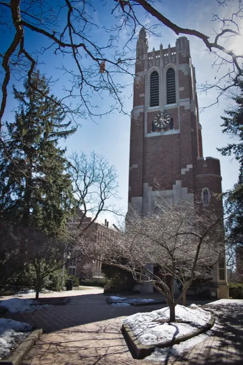
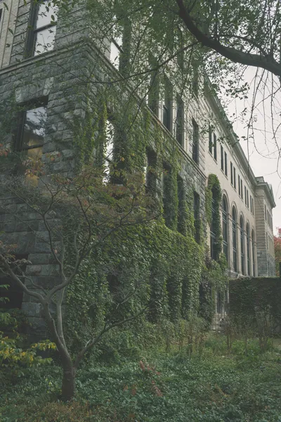
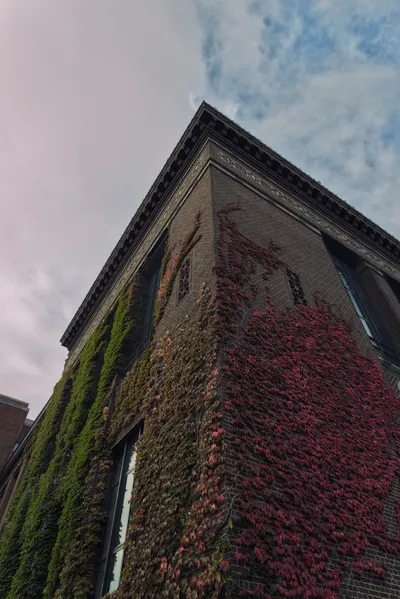

Ideas · · 10 min read
Open Access Still Charges the Wrong People
What it costs to publish, review and read research now, and why open access moved the bill onto researchers who can least afford it.
Photograph © Ken Reid
Open Access Still Charges the Wrong People
It costs $12,850 (!!) to publish one open access paper in Nature (£9,390, or €10,850).[1] In March I was one of six authors on a paper in the Journal of Open Source Software, and it cost us nothing to publish - and costs readers nothing to read.[2] JOSS worked out its own bills in 2019: a Crossref membership, a dollar for each paper's DOI, $19 a month of web hosting, and a domain name. That came to $813 a year, or $2.71 a paper.[3]
I'm all for open access. Research paid for by taxpayers and charities should be free for anyone to read, including the people who paid for it, and I have no wish to go back to paywalls. What bothers me is how we ended up paying for it. The subscription model charged readers, through their university libraries. The model that replaced it at a lot of journals charges authors, one paper at a time, and that is an awful system that harms researchers not in top-tier Western universities.
Quick jargon guide
- Open access (OA): a paper anyone can read online, with no payment or login.
- APC (article processing charge): the fee a journal charges the authors, or their funder, to publish a paper open access.
- Gold OA: the journal publishes the paper open access itself, usually for an APC.
- Green OA: the author puts a free copy in a repository or on arXiv, while the journal's version may stay behind a paywall.
- Diamond OA: free to read and free to publish. A university, a society or a pile of volunteers covers the costs.
- Hybrid journal: a subscription journal that also sells open access one paper at a time.
- Read and publish deal: one payment from a university that covers its people reading a publisher's journals and publishing in them open access.
- Peer review: other researchers reading a submitted paper and recommending whether it gets published, and what has to change first.
- Preprint: the authors' own copy of a paper, posted publicly, often before peer review.
Pay to publish
RELX, the company behind Elsevier, reports its journals and research databases as one business, Scientific, Technical & Medical.[4] In 2025 that business made £2,714 million in revenue and £1,035 million in adjusted operating profit, a margin of 38.1%. In the risks section of the same results, RELX describes the change in how research gets paid for, with "'pay-to-publish' (commonly referred to as Open Access) becoming a larger share relative to 'pay-to-read'". It puts the growth in its research publishing down to volume, with "article submissions growing very strongly across the portfolio".[5]
A subscription pays for access to a journal. An APC is paid per accepted paper, so a publisher's income goes up with the number of papers it publishes.


The fees vary, a lot. When Nature's news team wrote about them in 2023, NeuroImage (Elsevier) charged $3,450, The Lancet Neurology $6,300, Human Brain Mapping (Wiley) $3,850 and Nature Neuroscience $11,690, and researchers typically paid them out of their grants.[6]
NeuroImage went open access in 2020 with a $3,000 APC, and Elsevier raised it twice, to $3,450. In June 2022 the editors asked for it to come down below $2,000, and in March 2023 they told Elsevier they would resign if it didn't. It didn't. On 17 April 2023 the 42 editors of NeuroImage and its companion journal announced they were resigning, saying the fees exclude scholars in countries where research isn't well funded. Elsevier's response was that its APCs are "set in line with our policy [of] providing above average quality for below average price". The editors started a new journal, Imaging Neuroscience, with the non-profit MIT Press, and said they were aiming for an APC of at most half the old one.[6]
Unpaid reviewers
When the NeuroImage editors complained about that $3,450, Elsevier said its APCs cover the costs of publishing an open access paper, "including editorial and peer-review services, copyediting, typesetting, archiving, indexing, marketing and administrative costs".[6] The peer reviewing in that list is done by other researchers, for free. The JOSS team, who run their own journal on volunteers, point out that editors and reviewers aren't paid at almost any other journal either, open access or not, for-profit or not, apart from a stipend for some editors-in-chief and a couple of publishers with salaried in-house editors.[3]
Balazs Aczel, Barnabas Szaszi and Alex Holcombe tried to put a number on the reviewing in 2021. They estimated that reviewers worldwide spent over 100 million hours on peer review in 2020, which they put at more than 15,000 years. The time US-based reviewers spent was worth over $1.5 billion in salary, China-based reviewers over $600 million and UK-based reviewers close to $400 million, and the authors say themselves these are very likely underestimates, because their data only covered part of the world's journals.[7]
A review, for anyone who hasn't done one, means reading a stranger's paper closely enough to judge it, checking the method and the maths, and then writing up what's wrong and how to fix it, kindly enough that the authors will act on it and not just get upset. It takes hours. I've reviewed for a bunch of different conferences and journals over the years and you're lucky if it takes one hour: most papers you're assigned are loosely connected to your expertise so you have to learn about the problem application, or the formulation differences, or alien experimental design before even starting to read the paper in earnest.

My papers
My publication list is a decent sample of how this has changed. My first paper was at IEEE SSCI in 2016. Then came two first-author papers at GECCO, in 2019 and 2021, both published by the ACM.[8][9] In 2023 I was on a preprint on arXiv, which is free to post and free to read, and this year there was the JOSS paper.
On 1 January 2026 the ACM made its whole Digital Library open access, so both GECCO papers are now free for anyone to read.[10] I think that's great, and for readers in computing it's a huge change.
Someone still has to pay, though, and ACM's answer is a mix. A university can
That is nowhere near Nature's price, and ACM says its approach is there to keep its publications and its education, diversity, policy, and community programmes going,[10] so I'm not going to paint it as the villain here. But think about who ends up paying the $750: the PhD student at a university that didn't sign up, the researcher who left academia for industry and still writes the odd paper, the postdoc between contracts whose new employer hasn't got round to it, the retired professor, the independent researcher with no institution at all. Whether they pay nothing or $750 depends on a deal somebody at their employer did or didn't sign. I'm a visiting fellow at the University of Stirling, but I don't have research grants these days - so I tend to publish with coauthors who have funding, or just
Who gets priced out
The worry that APCs shut out researchers from poorer countries has been tested, and the study I find most convincing is by Audrey Smith and colleagues, because of how they set it up. They used Elsevier's "mirror journal" system, where a hybrid journal and its
The OA Diamond Journals Study estimated in 2021 that there are somewhere between 17,000 and 29,000
What I'd tell a researcher
If you're choosing where to send a paper, look for a diamond journal in your field before you look at anything else, and post a preprint whichever way it goes. If you review, you're allowed to say no to publishers whose fees you think are ridiculous, and give that time to journals like JOSS instead.
And if you hit a paywall on one of my older papers, email me and I'll gladly send you a copy.
Common questions
Should I pay an APC out of my own pocket?
No, never. Post a preprint and put a copy on your own website instead.
Is a preprint the same as the published paper?
Not always. It's the authors' own version, sometimes from before peer review, so check its date and whether a published version exists.
References
- Nature. Publishing options: Gold Open Access. Accessed 20 October 2026. https://www.nature.com/nature/for-authors/publishing-options
- Song, Y., Bevington, A. R., Reid, K. N., Zhu, J., Liu, Y., & Zhu, K. (2026). BatchPlanet: Batch access and processing of PlanetScope imagery for spatiotemporal analysis in R. Journal of Open Source Software, 11(119), 9268. https://doi.org/10.21105/joss.09268
- Katz, D. S., Barba, L. A., Niemeyer, K., & Smith, A. M. (2019, 4 June). Cost models for running an online open journal. Journal of Open Source Software Blog. https://blog.joss.theoj.org/2019/06/cost-models-for-running-an-online-open-journal
- RELX. Scientific, Technical & Medical. https://www.relx.com/our-business/market-segments/scientific-technical-and-medical
- RELX (2026). Results for the year to 31 December 2025. Filed with the US Securities and Exchange Commission. https://www.sec.gov/Archives/edgar/data/929869/000092986926000008/relx-20260201xex99d1.htm
- Sanderson, K. (2023, 21 April). Editors quit top neuroscience journal to protest against open-access charges. Nature news. https://doi.org/10.1038/d41586-023-01391-5
- Aczel, B., Szaszi, B., & Holcombe, A. O. (2021). A billion-dollar donation: estimating the cost of researchers' time spent on peer review. Research Integrity and Peer Review, 6, 14. https://doi.org/10.1186/s41073-021-00118-2
- Reid, K. N., Li, J., Brownlee, A., Kern, M., Veerapen, N., Swan, J., & Owusu, G. (2019). A hybrid metaheuristic approach to a real world employee scheduling problem. In Proceedings of the Genetic and Evolutionary Computation Conference (GECCO '19), 1311–1318. ACM. https://doi.org/10.1145/3321707.3321769
- Reid, K. N., Miralavy, I., Kelly, S., Banzhaf, W., & Gondro, C. (2021). The factory must grow: automation in Factorio. In Proceedings of the Genetic and Evolutionary Computation Conference Companion (GECCO '21), 243–244. ACM. https://doi.org/10.1145/3449726.3459463
- ACM. Open Access Publication & ACM: ACM's transition to full open access. Accessed 20 October 2026. https://www.acm.org/publications/openaccess
- ACM. Open Access Publication & ACM (authors' pages: ACM Open, 2026 and 2027 subsidised APC pricing). Accessed 20 October 2026. https://authors.acm.org/open-access/initiatives-services-authors-site
- Smith, A. C., Merz, L., Borden, J. B., Gulick, C. K., Kshirsagar, A. R., & Bruna, E. M. (2021). Assessing the effect of article processing charges on the geographic diversity of authors using Elsevier's "Mirror Journal" system. Quantitative Science Studies, 2(4), 1123–1143. https://doi.org/10.1162/qss_a_00157
- Bosman, J., Frantsvåg, J. E., Kramer, B., Langlais, P.-C., & Proudman, V. (2021). OA Diamond Journals Study. Part 1: Findings. Zenodo. https://doi.org/10.5281/zenodo.4558704